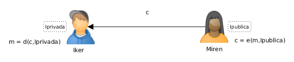
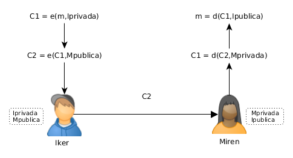
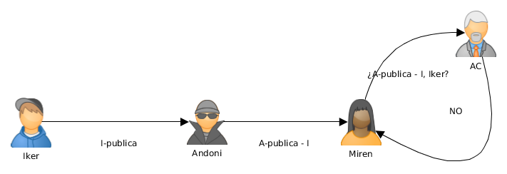

Cifrado asimétrico
Mikel Egaña Aranguren
Cifrado asimétrico
- Criptografía de clave pública
- Cifrado híbrido
- Algoritmos de clave pública
Criptografía de clave pública
A principios de los 70 surgen los sistemas criptográficos asimétricos como solución al problema de compartir la clave en sistemas simétricos
Usa algoritmos de clave asimétrica: la clave que cifra no es la que descifra
Criptografía de clave pública
Dos claves por usuario:
- La clave pública que conoce todo el mundo
- La clave privada que sólo conoce el usuario
Están relacionadas matemáticamente
Lo que una clave cifra sólo lo puede descifrar la otra
Criptografía de clave pública

Criptografía de clave pública
- Iker tiene su clave privada Iprivada y todos tienen la clave pública de Iker, Ipública
- Miren cifra su mensaje m usando la clave pública de Iker: c = e ( m , Ipública )
- Miren manda el criptograma c a Iker
- Iker recibe c
- Iker descifra c usando su clave privada Iprivada: m = d ( c , Iprivada )
- Confidencialidad: Sólo Iker puede descifrar el mensaje
Criptografía de clave pública

Criptografía de clave pública
Ventajas:
- Sólo el destinatario puede leer el mensaje
- Sólo hay que almacenar una clave
- Cualquiera puede usar la clave pública para enviar un mensaje confidencial a Iker
- No son necesarios canales seguros para comunicar la clave pública
Criptografía de clave pública
Problemas:
- La clave privada debe mantenerse privada
- Debería ser (prácticamente) imposible deducir la clave privada a partir de la clave pública
- Cifrado y descifrado son más lentos que en los sistemas de clave secreta
- Miren debe estar segura de que está usando la clave pública de Iker
- Debe ser fácil obtener las claves públicas
Criptografía de clave pública
Cada usuario genera su par (clave pública, clave privada) y publica la clave pública en un servidor de claves: Key Certification Authority o Key Distribution Center (KDC)
Criptografía de clave pública
Más problemas:
- ¿Cómo sabe Iker si el mensaje es realmente de Miren?
- Cuando Iker conteste ¿Cómo sabe Miren que el mensaje es realmente de Iker?
Criptografía de clave pública
- Si Iker lo cifra con su clave privada lo puede descifrar cualquiera (Todo el mundo conoce Ipública)
- Solución:
- Iker cifra el mensaje con su clave privada: C1 = e ( m, Iprivada )
- Luego lo vuelve a cifrar con la clave pública de Miren: C2 = e ( C1 , M pública )
Criptografía de clave pública
- Sólo Miren puede desencriptarlo con su clave privada:
- Confidencialidad: Sólo Miren puede descifrar el mensaje: C1 = d ( C2 , Mprivada )
- Autenticidad y No Repudio: Sólo Iker ha podido enviar el mensaje: m = d ( C1, Ipública )
Criptografía de clave pública

Criptografía de clave pública
¿Qué ocurre si se interpone alguien en las comunicaciones?
Ataque Man in the middle:
- Un intermediario recibe todos los mensajes sin que las
otras partes se enteren
- Se necesita interceptar todas las comunicaciones entre
las dos partes
Criptografía de clave pública

Criptografía de clave pública
Cuando Iker y Miren quieren comenzar a comunicarse de manera secreta, se intercambian las respectivas claves públicas
Andoni las intercepta y las intercambia por la suya

Criptografía de clave pública
Iker y Miren cifran sus mensajes con la que CREEN la clave pública del otro y con su clave privada
Andoni intercepta los mensajes, los lee, modifica y los encripta con su clave privada
Criptografía de clave pública

Criptografía de clave pública
Iker y Miren creen que están comunicándose de manera segura
Andoni está enterándose de todo y modificándolo a su antojo
Formas de evitarlo:
- Paso de claves en canales "seguros"
- Uso de una autoridad que certifique que una clave pública pertenece a quien dice: Autoridad de Certificación (AC)
Criptografía de clave pública

Cifrado híbrido
Los sistemas de clave secreta son mucho más rápidos que los de clave pública
Muchas veces se usa una combinación: El sistema de clave pública se usa para compartir una clave secreta S que sólo se usa una vez
El sistema de clave secreta usa S para cifrar el mensaje
Cifrado híbrido
Miren genera una clave secreta S y cifra su mensaje usándola: cm = e1 (m,S)
Miren cifra S usando la clave pública de Iker: cs = e2 ( S , Ipública )
Miren manda [ cm, cs ] a Iker
Cifrado híbrido

Cifrado híbrido
Iker recibe [ cm , cs ]
Iker descifra S usando su clave privada Iprivada: d2 ( cs , Iprivada ) = S
Iker descifra m usando S: d1 ( cm , S ) = m
Cifrado híbrido

Algoritmos de clave pública
- Diffie-Hellman
- RSA
- ElGamal
- DSA
- Curvas elípticas
Diffie-Hellman
- 1976 - primer sistema de clave pública
- No se usa para cifrar
- Usando claves públicas establece una clave privada compartida que luego puede usarse como clave simétrica
- Basado en el problema del logaritmo discreto
RSA
1977 - Rivest–Shamir–Adleman
A diferencia de Diffie-Hellman, válido para cifrar, descifrar, y firmar, pero debido a su lentitud sobre todo usado en sistemas híbridos
RSA security: Verisign (Dominios, Infraestructura de Clave Pública, SSL, ...)
Su seguridad reside en la imposibilidad de factorizar números grandes (> 2048 bits)
RSA
Generación de claves:
ElGamal
1984 - Taher Elgamal
Basado en Diffie-Hellman pero también se puede usar para cifrar, descifrar y firmar
DSA
1991 - Digital Signature Algorithm
Estándar de EEUU para firmas digitales (FIPS 186-4)
Sólo para firmas
Curva elíptica
1985
Mismo nivel de seguridad que RSA con claves más cortas
Elliptic Curve Diffie–Hellman (ECDH)
Elliptic Curve Digital Signature Algorithm (ECDSA)
Algoritmos de clave pública: usos
- DNI electrónico
- PGP
- SSH
- SSL / TLS
PGP
- RSA / DSA
- IDEA / TripleDES
SSL / TLS
- RSA / DSA / Diffie-Hellman
- IDEA / DES / TripleDES / AES